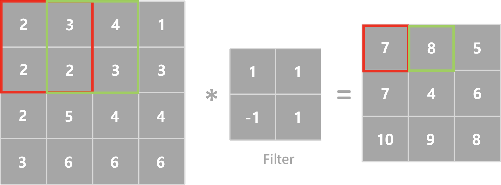
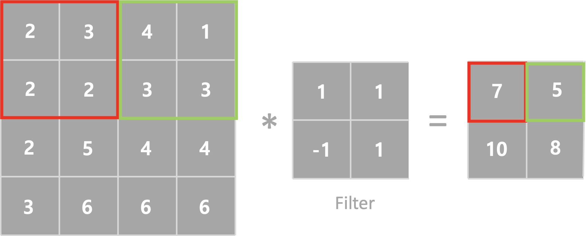
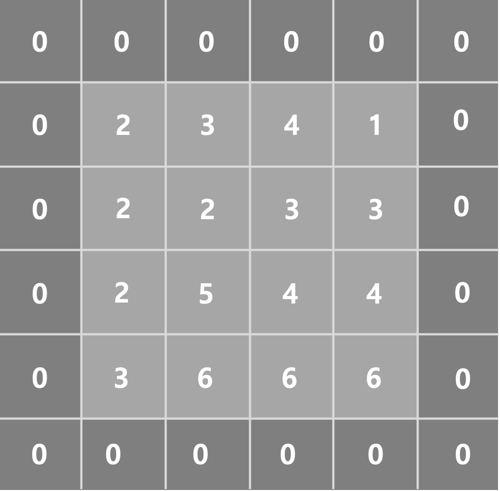
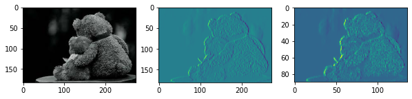

[Python] Deep Learning - CNN
CNN (Convolutional Neural Network)
이번시간에는 CNN에 대하여 알아보겠습니다. CNN 은 합성곱 신경망으로서 이미지의 특징을 검출하여 학습하는 방법입니다. DNN의 경우 MNIST에서 이미지를 판단할때 회전된 이미지의 대한 학습이 없다면 다른 이미지로 판단할 수 있습니다. 하지만 CNN 의 경우 이미지의 특징을 검출하기 시간과 효율이 좋습니다.
하기 이미지를 보면서 설명을 해보도록하겠습니다.

Image credits : Mathworks

Image credits : Mathworks
CNN 은 Feature에 대한 학습을 먼저 진행하고 분류를 실행합니다. 특징을 학습하기 위해서 Filter 와 Convolution(합성곱)을 진행하게 됩니다.
Convolution (합성곱)
이미지를 입력하면 Filter와 합성곱을 통해서 새로운 이미지를 만들어 낼 수 있습니다.

필터는 한개만 존재하지 않고 여러개가 존재할 수 있습니다. 따라서 이미지 하나에서 여러개의 Filter와 Convolution을 진행하면 Filter의 개수만큼 출력이미지를 얻을 수 있습니다.
Strides
Strides는 필터가 계산과정에서 이동하는 크기입니다. 기본값은 (1,1) 이며 (2,2), (3,3) 등으로 설정할수 있습니다. 하기 그림은 Strides 변환에 따른 출력이미지입니다.

Strides = 1

Strides = 2
Padding
위에서 확인한바와 같이 필터와 합성곱을 진행하면 출력이미지의 크기가 작아지게 됩니다. 이를 보상하기 위하여 나온 개념이 Padding 입니다. 입력데이터 가장자리에 빈 값을 채워넣어 행렬곱을 연산하는 방식이 Padding 이라고 부르며 가장자리 값이 모두 0으로 채워진 경우 Zero padding 이라고 부릅니다.

Padding 에는 두가지 방식이 존재합니다.
VALID
원본이미지에 비해 출력이미지가 작아지는 것을 허용합니다. 빈값을 채워넣지 않고 합성곱을 합니다.
Same
빈값을 넣어 원본이미지와 출력이미지가 동일한 크기가 되도록 빈값을 사용합니다.
이미지 표현
코드구현에 앞서 이미지 표현에 대하여 알아보도록 하겠습니다. 이미지는 세가지로 표현할 수 있습니다.
binary : 0과 1로표현 (0 or 1)
gray scale : 무채색을 0에서 255 단계로 나누어 표현합니다. (0 ~255)
color image : RGB 컬러로 표현하며 (0~255,0~255,0~255) 로 표현이 가능하다.
PNG : color 이미지에서 (R,G,B Alpha) 로 표현하며 Alpha 는 이미지의 투명도를 표현한다.
코드로 구현을 해보도록 하겠습니다.
%reset
import numpy as np
import tensorflow as tf
import matplotlib.pyplot as plt
import matplotlib.image as img
# sub plot을 2개 만들어 보아요!
fig = plt.figure(figsize=(10,10)) # 가로 10인치, 세로 10인치
ax1 = fig.add_subplot(1,3,1) # 1,2는 행과 열을 의미, 마지막 1은 그중 몇번째 인지를 의미
ax2 = fig.add_subplot(1,3,2)
ori_img = img.imread('./images/Teddy.jpeg')
ax1.imshow(ori_img)
print('ori_img의 shape:{}'.format(ori_img.shape))
# convolution 연산을 수행하려면 4차원이 필요!
# 이미지가 3차원 + 그런 이미지가 여러장 이니까 4차원으로 표현!!
# 현재 shape
# 이미지 개수, height, width, color 이형식으로 convolution 입력으로 넣어요
input_image = ori_img.reshape((1,)+ ori_img.shape)
print('input_image shape : {}'.format(input_image.shape))
input_image = input_image.astype(np.float32) # 정수형 ndarray를 실수형으로 변환
# 입력이미지의 color 수를 변경 > channel을 1로 변경
input_image = input_image[:,:,:,:1]
print('변경된 input_image shape : {}'.format(input_image.shape))
# filter를 준비해야 해요!
# filter : (height, width, color, filter 개수)
# filter는 정방형 중에 3X3을 많이 사용!
# filter : (3,3,1,1)
weight = np.array([[[[-1]],[[0]],[[1]]],
[[[-1]],[[0]],[[1]]],
[[[-1]],[[0]],[[1]]]])
print(weight.shape)
sess = tf.Session()
con2d = tf.nn.conv2d(input_image,
weight,
strides=[1,1,1,1],
padding='VALID')
result = sess.run(con2d) # relu 가 안들어가 있어요!
print('결과 데이터의 shape : {}'.format(result.shape))
t_image = result[0,:,:,:]
print(t_image.shape)
ax2.imshow(t_image)
sess = tf.Session()
pool_process = tf.nn.max_pool(result,
ksize = [1,2,2,1],
strides = [1,2,2,1],
padding='VALID')
pool_result = sess.run(pool_process)
pool_image = pool_result[0,:,:,:]
ax3 = fig.add_subplot(1,3,3)
ax3.imshow(pool_image)
plt.show()
결과
